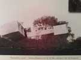
En novembre 1906, Santos-Dumont réalisait à Boulogne, sur le terrain de Bagatelle, le premier vol de son "14-bis". Pourquoi 14-bis ? Parce que Santos avait jusque-là construit des ballons. Et pour s'assurer que sa création ailée était correcte, il la fit d'abord voler accrochée sous son dernier ballon, le 14...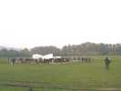
Mais la photo prouve qu'il vola vraiment ensuite... mais pas souvent et pas longtemps, il s'intéressait toujours à l'avenir, et passa ensuite à la Demoiselle. Mais beaucoup de gens, en France comme au Brésil, ont voulu célébrer cet anniversaire au lieu historique même...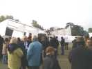
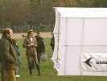
Mais approchons nous, comme ce dandy à la mode de l'époque (sauf l'appareil photo numérique) ! Rappelons que l'avion est un "canard", les gouvernes étant à l'avant.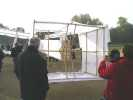
La cellule avant est en fait un Hargrave mobile sur 2 axes : profondeur et direction, commandés par des câbles depuis la "nacelle-pilote" !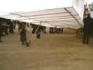
Sous chaque aile, une balancine montée sur un support élastique maintient l'équilibre, mieux que le train très étroit !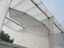
L'appareil se pilote en tangage et lacet, mais il existe aussi des "ailerons" dans la cellule de bout d'aile !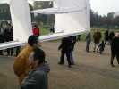
Ce semblent être à la fois des ailerons et des spoilers, pilotant en traînée... Leur utilisation semble problématique, les câbles n'étant pas tendus, d'ailleurs le premier vol s'est fait sans (voir 1ère photo).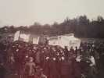
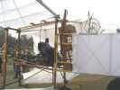
Le "poste de pilotage" : le pilote était debout dans la nacelle (récupérée d'un dirigeable ?), face à droite, vers l'avant. Le volant commande la cellule avant en direction, le levier en profondeur, et la poignée de frein... les freins ! On distingue aussi le levier des ailerons qui sera attaché dans le dos du pilote par la courroie qui pend au premier plan.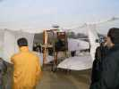
Vue de l'arrière : le réservoir surélevé est typique, mais le moteur et l'hélice (en bois, quand même) sont modernes, c'est assez dangereux comme ça ! La toile est très détendue par l'humidité ambiante.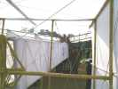
Aperçu à travers la cellule avant, Audouin Dollfus le célèbre astronome et aéronaute en ballon (record du monde à 14000 m !) qui patronne la manifestation jouit de la minute présente mais reste très accessible !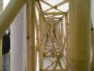
Le fuselage est très solide, c'est un treillis de bambou où passent les câbles de commande entre le "cockpit" et l'avant !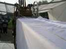
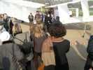
Les personnalités entourent l'avion avant son vol. Les Brésiliens, dont les officiers de leur armée de l'air, sont à l'honneur...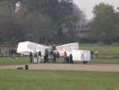
Mais le moment approche, il ne reste que des gens sérieux, par exemple de l'Aéro-club de France, pour donner un coup de main, par exemple pour maintenir l'appareil pendant que le moteur chauffe. Le pilote brésilien M. FUCHS est déjà en place... Faut être gonflé !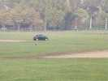
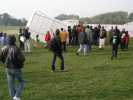
L'avion roule, accélère assez vite... Malheureusement, au moment où il allait décoller une aile se lève, se vrille et se replie vers l'arrière ! Le principal, le pilote n'a rien ! La cause n'est pas très claire, l'appareil ayant déjà volé : humidité de la toile qui poche et augmente la traînée, humidité du bois qui le fragilise, cahot sur le sol inégal, assemblage qui a lâché, addition sans doute de plusieurs causes ?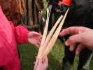
Evidemment, l'aile qui s'est repliée vers l'arrière a heurté l'hélice. Les longerons de l'aile sont déchiquetés, on en trouve des morceaux sur 50 m !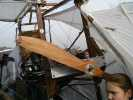
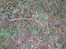
Un câble d'entretoisement en croix a été arraché, mais on voit qu'il a été heurté par l'hélice après coup...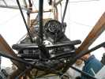
L'arbre de l'hélice (le tube qui passe en haut) est tout tordu, et s'est désolidarisé du moteur (heureusement pour celui-ci !), heurtant au passage les tuyaux d'échappement et les poutres de la structure !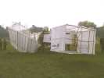
Finalement, les spectateurs partent petit à petit mais sans tristesse. L'essai a montré le courage des pilotes de l'époque et de maintenant, ainsi que les possibilités de ces machines ! M. Fuchs a été applaudi et félicité, bien sûr !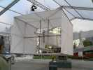
Sur l'avenue Charles de Gaulle, à Neuilly était exposé (et reste jusqu'au 12, avis) une autre réplique du 14bis, d'une qualité très supérieure à celui qui a essayé de voler à Bagatelle. Toutes les membrures sont plus fines et sans trop de renforts. Les toiles sont en double épaisseur et masquent donc les armatures sur les 2 faces : la traînée doit être considérablement plus faible, et le poids aussi...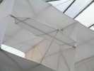
Il a des "ailerons" comme l'autre, mais la commande est attachée à l'avant, et il semble qu'un sandow (couvert par un fourreau, bien sûr...) tire vers le bas. La liaison au pilote est aussi différente et beaucoup plus légère !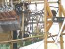
Elle a un moteur d'époque, un splendide V8, je ne sais pas s'il fonctionne ! La boîte à l'arrière est la magnéto qui envoie les étincelles aux bougies ! L'hélice est "classic" : des palettes au bout de bras, avec cependant une construction manifestement moderne... La pompe à eau, en bas, fait circuler l'eau dans les chemises en cuivre et dans 2 radiateurs latéraux.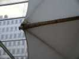
Tout est fait pour que les toiles soient bien tendues, contrairement à l'autre où elles sont juste "velcrotées" sur les longerons. Ici, une corde à piano est bandée, et la ralingue de la toile est tirée dessus tout au long comme une caténaire de train ! Toute cette construction est bluffante de qualité et témoigne sans doute du soin apporté par Santos-Dumont à ces "détails", importants pour voler avec une puissance très limitée...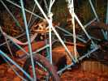
Le théâtre de Neuilly, en face du 14bis exposé, abrite (jusqu'au 12) une exposition plus ouverte que sur Santos-Dumont. Il y a cependant une Demoiselle, avec tous les tubes et haubans ajoutés plus tard...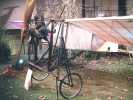
Il y a aussi un des premiers Blériot, avec le moteur rotatif (les cylindres tournent avec l'hélice !) Gnome et Rhône. L'ensemble est 3 fois plus lourd qu'une Demoiselle...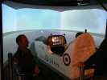
L'Armée de l'Air est venue avec un simulateur de l'avion Epsilon conçu pour la formation des pilotes, j'ai pu faire un petit tour, c'est très représentatif de la réalité !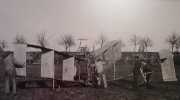
Un parcours présentait aussi la carrière de Santos, ballons et avions, avec pas mal de réalisations que je ne connaissais pas (je ne suis pas vraiment un expert, faut dire)... Par exemple ce biplan en "bois aggloméré" (une sorte de contreplaqué, je pense), qui s'est malheureusement (ou heureusement ?) cassé avant le premier décollage, les ailes se tordant comme des lasagnes...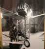
Le même dans les ateliers, avec son moteur placé de façon étonnamment haute... Santos était courageux !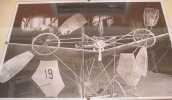
A la Mairie du 16ème arrondissement se tenait aussi une expo, où on découvrait également des versions inconnues. Sur cette photo une version de la Demoiselle 19 avec 2 hélices entraînées par courroies, dont on n'a plus entendu parler à ma connaissance...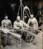
Et encore ce fuselage avec vraiment 2 moteurs ! Peut-être une nacelle de ballon, mais les roues semblent prouver qu'il s'agit bien d'un avion, tombé dans une oubliette, lui aussi !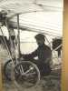
Santos-Dumont assis dans sa Demoiselle à moteur supérieur...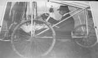
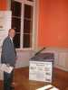
J'avais amené ma Demoiselle, qui, bien que cerf-volant, trônait en bonne place...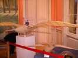